Getting Help
Every resource on this page comes from the biblical counseling tradition. Books are a wonderful help, but they work best alongside a conversation with one of our pastors, not in place of one.
- Biblical Counseling: What to ExpectLou PrioloA short booklet for anyone about to meet with a counselor.Get it at Grace Books →Grace Books
- Association of Certified Biblical Counselors (ACBC)biblicalcounseling.comResources, and a directory of certified biblical counselors. biblicalcounseling.comApproved
- Christian Counseling & Educational Foundation (CCEF)ccef.orgArticles, minibooks, and podcasts on specific struggles. ccef.orgApproved
- CCEF minibooksNew Growth PressShort, inexpensive booklets on specific struggles such as anxiety, depression, anger, grief, and pornography. Good to read with a friend or to hand to someone who is hurting.Find it →Approved
- Transformed (podcast)Greg GiffordShort episodes on anxiety, depression, relationships, and real change. fortisinstitute.org/greg-giffordPastor Drew's pick
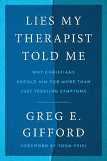
Lies My Therapist Told MeGreg GiffordWhy Christians should aim for more than treating symptoms: a biblical critique of today's mental health assumptions.Find it →Approved
Depression & Discouragement
- Approved
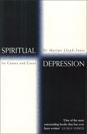
Spiritual DepressionD. Martyn Lloyd-JonesClassic sermons on the causes and cure of spiritual discouragement.Find it →Approved- A Lifting Up for the DowncastWilliam BridgeA Puritan classic for the discouraged Christian.Get it at Grace Books →Grace Books
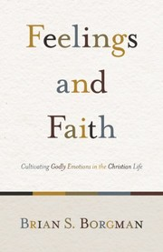
Feelings and FaithBrian BorgmanPastor Drew's strongest recommendation on handling emotions biblically.Find it →Start herePastor Drew's pick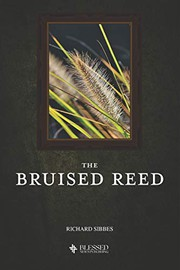
Start herePastor Drew's pick- Pastor Drew's pick
- Recommended by Tim Challies
- Recommended by Tim Challies
- Approved
Anxiety, Fear & Worry
- Pastor Drew's pick
- Approved
- When People Are Big and God Is SmallEd WelchPeer pressure, codependency, and the fear of man.Get it at Grace Books →Grace Books
- Grace Books
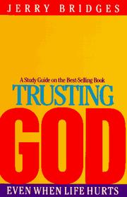
Pastor Drew's pick- Pastor Drew's pick
- We Are Not Descended from Fearful MenDrew Buell · Cool PublishersFive sermons preached during 2020.From Cool Publishers →Pastor Drew's pick
Anger, Conflict & Forgiveness
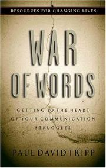
Approved- Grace Books
- Grace Books
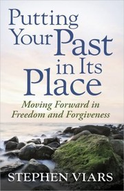
Approved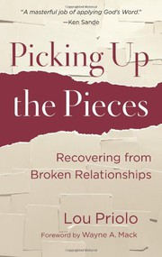
Approved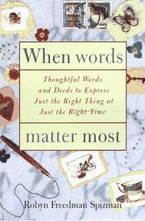
Grace Books- Pastor Drew's pick
Addiction & Sexual Sin
- Start herePastor Drew's pick
- Passions of the HeartJohn D. StreetBiblical counsel for stubborn sexual sins.Get it at Grace Books →Grace Books
- Grace Books
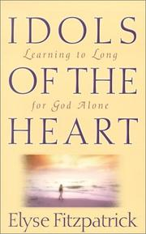
Grace Books- Recommended by Tim Challies
- Recommended by Tim Challies
- Recommended by Tim Challies
- Recommended by Tim Challies
Suffering, Illness & Grief
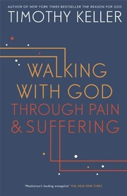
Start herePastor Drew's pick- Start herePastor Drew's pick
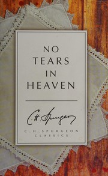
Pastor Drew's pick- Every Moment Holy, Volume IIDouglas McKelveyPrayers and liturgies for seasons of death and grief.Find it →Pastor Drew's pick
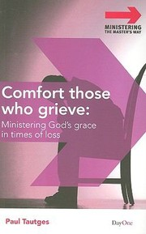
Approved- Approved
- Pastor Drew's pick
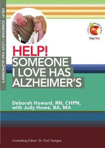
Grace Books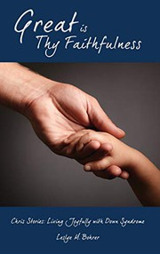
Great Is Thy FaithfulnessLeslye & Robert BohrerLiving joyfully with Down syndrome.Get it at Grace Books →Grace Books- Grace Books
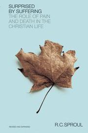
Recommended by Tim Challies- Recommended by Tim Challies
- Recommended by Tim Challies
- Recommended by Tim Challies
- Recommended by Tim Challies
- Recommended by Tim Challies
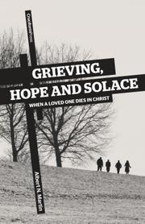
Recommended by Tim Challies- Recommended by Tim Challies
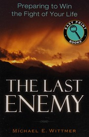
Recommended by Tim Challies- Recommended by Tim Challies
Identity & Sexuality
- Pastor Drew's pick
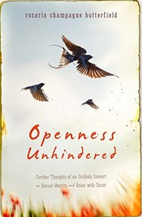
Pastor Drew's pick- Grace Books
- Grace Books
Money & Possessions
- Money, Debt, and FinancesJim NewheiserCritical questions answered from the biblical counseling tradition.Find it →Recommended by Tim Challies
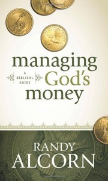
Recommended by Tim Challies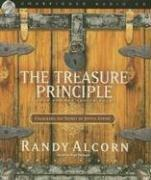
Recommended by Tim Challies
Growing in Christ
How God changes His people, and how to put off sin and put on righteousness.
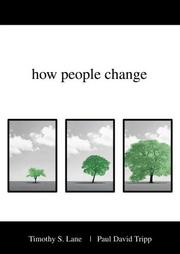
Approved- Start herePastor Drew's pick
- Respectable Sins (with discussion guide)Jerry BridgesConfronting the sins we tolerate.Get it at Grace Books →Approved
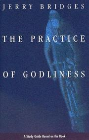
Approved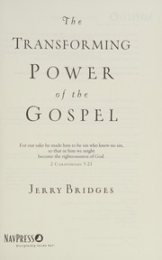
Approved- Start herePastor Drew's pick
- Approved
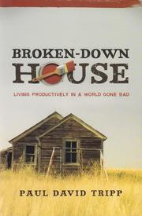
Approved- Grace Books
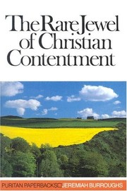
Pastor Drew's pick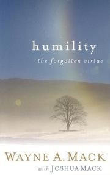
Approved- A Homework Manual for Biblical LivingWayne MackPractical assignments on personal and relational problems.Find it →Approved
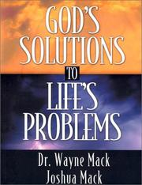
Approved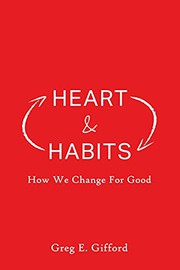
Heart & Habits: How We Change for GoodGreg GiffordFirst place in ACBC's 2021 list of best biblical counseling books.Find it →Approved
For Those Who Help Others
For pastors, leaders, and any member who wants to bring God's Word to a friend who is struggling.
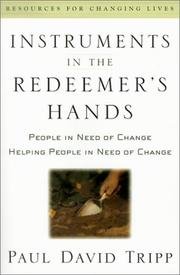
Instruments in the Redeemer's HandsPaul David TrippPeople in need of change helping people in need of change.Get it at Grace Books →Start herePastor Drew's pick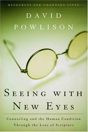
Start herePastor Drew's pick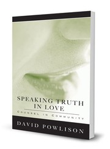
Approved- Grace Books
- Approved
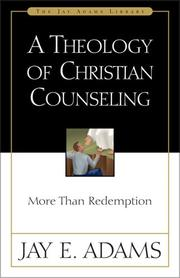
Grace Books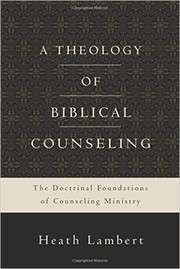
Grace Books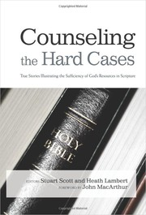
Grace Books Grace Books
Grace Books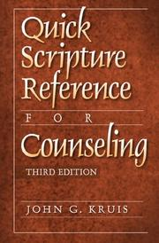
Grace Books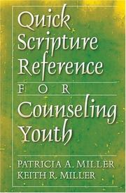
Grace Books
Reviewing this draft?
Thank you for helping. As you read, jot down anything you would add, remove, or move, and anything in a note that seems off. Then send your thoughts to Pastor Drew.